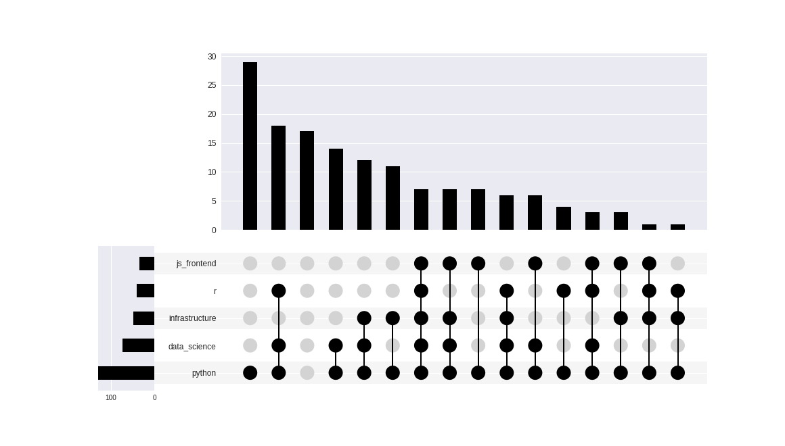
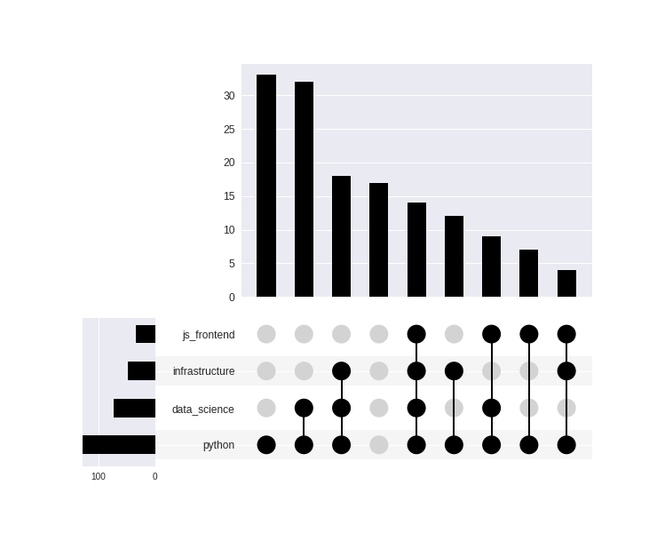
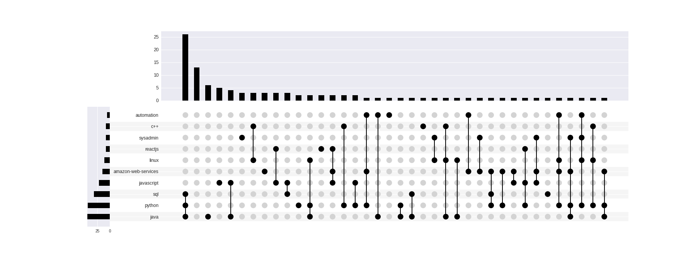
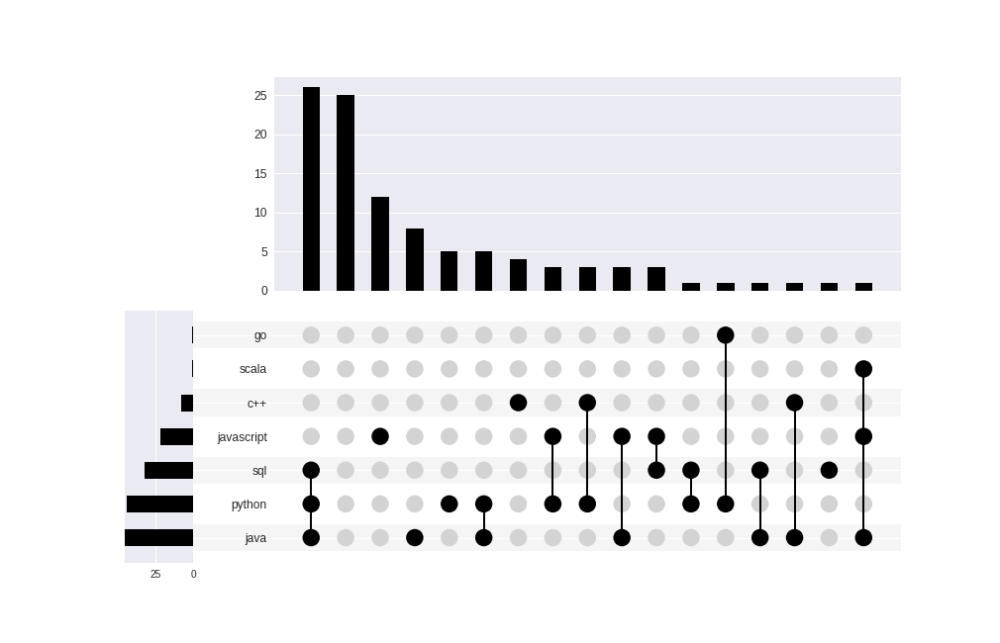
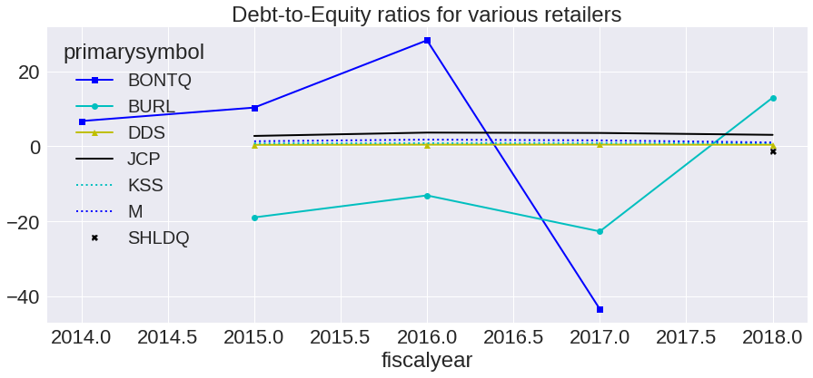

"Py" Kind of Town
Python in Chicago
@tanyaschlusser—DuPage Python Meetup
Who are you?
(from Meetup data)
Membership stats (on 29 Dec 2018)
- 147 people in the DuPage Python group
- 88% — at least one other Python group
- 50% — at least one Data Science group
- 33% — at least one infrastructure group
- 27% — at least one R group
- 23% — at least one front end group
Intersections (top 10 tags)

Without R may be clearer

That was an upsetplot
- Shows multiple set insersections
- Lex, Gehlenborg, Strobelt, Romain, Pfister (2014)
- Primary implementation: in the Caleydo suite
- R implementation: UpSetR
- Python implementation UpSetPlot (unofficial)
Back story: 6-way Venn Diagram
![Copy of a 6-way Venn Diagram from a famous Nature article (follow the hyperlink for more)
that literally has a picture of a banana on it and a couple of totally weird squiggly shapes that's
basically unreadable. It shows the relationship between the banana's genome and 5 other
species. It was so unreadable it apparently inspired the authors to find a better way.
The way is a bar chart of consecutive set intersections one after another that is pretty
much the visual equivalent of the data listed on the 'alt' section of the last slide.](https://caleydo.org/assets/images/projects/upset//banana.png)
This figure (Nature, 2012) so offended the authors 😱 that they published a new method in 2014.
Banana redo

Here's the UpSet banana plot.
(With most frequent intersections.)
Description

(from their website)
The dots denote intersections.
Here's their online viewer
Pnemonic: UpSet
...Venn Diagrams shouldn't make you up-set!
Meetup API
How did I get the data?
- REST API that returns JSON-formatted text
- Well-documented meetup.com/meetup_api/
- As of December 2018 you need a free API key
- Many APIs, very detailed; paid users get more
DuPage Python's interests are roughly
(overlapping)
- ½ analytics
- ⅓ infrastructure
- ¼ web
And regional employers?
based on a single-day job board snapshot …
- Free ones
StackOverflow (RSS) (great!)
GitHub API (meh) - Others not used (need a developer key)
Dice, LinkedIn, Google indexing
Stackoverflow Jobs
(Chicago 5 Jan 2019)
- 96 postings in the Chicago area right now
- 27% Director / Manager / Project Manager jobs
- 18% Backend jobs
- 17% Other developer jobs
- 11% Frontend jobs
- 11% Security jobs
- 7% DevOps jobs
- 7% Full Stack jobs
- 1% Data Science jobs 😭
By employer
- 96 postings in the Chicago area
- 54% Other companies
- 19% JP Morgan Chase
- 6% Uline
- 5% Discover
- 4% Infutor Data Solutions
- 4% Hays US
- 4% NextCapital
- 3% Critical Mass
Tagged language(s) — there's overlap
- 96 postings in the Chicago area
- 36% tagged Java
- 35% tagged Python
- 23% tagged SQL
- 22% tagged Javscript
- 9% tagged C++
- 5% tagged Ruby
Intesections
This uses data from a different date than the last 3 slides

Intersections with just languages
This uses data from a different date than the last 3 text slides

GitHub Jobs (5 Jan 2019)
- 180 U.S. postings
- 22% Other job categories
- 21% Manager/Director/Project Manager jobs
- 14% Front End jobs
- 14% Back End jobs
- 13% Full stack jobs
- 9% DevOps jobs
- 6% Data Science jobs
- 2% Security jobs
GitHub by language (+ overlap)
- 180 U.S. postings
- 40% tagged SQL
- 39% tagged Javascript
- 37% tagged Python
- 26% tagged Scala
- 16% tagged Java
- 9% tagged C++
Conclusion
(caveat: snapshot on a single day)
- 4x-10x less demand for data science than web
- Python is ubiquitous, and usually requested
in addition to another language
SEC API
Start here: sec.gov/developer
- The EDGAR API
- Electronic Data Gathering, Analysis, and Retrieval system
sec.gov/edgar/searchedgar/accessing-edgar-data.htm
SEC EDGAR data
(no APIkey)
- Max 10 queries/sec; else possibly block IP
- Press releases, legal announcements
- SEC forms/filings by public companies/investment firms since 1994
- Use regex to pull the parts you want
Options
- RSS feed (recent SEC publications; filings)
sec.gov/about/secrss.shtml - Daily / quarterly index files
(fixed-width text linking to each doc) - Archive files (zipped)
… produces this:
- Investor Alert: Scammers May Try to Take Advantage of the California Wildfires
- Investor Bulletin: Variable Life Insurance
- Updated Investor Bulletin: Variable Annuities
- Investor Alert: Be Vigilant for Investment Scams Related to Recent Hurricanes
- Investor Alert: Watch Out For False Claims About SEC And CFTC Endorsements Used To Promote Digital Asset Investments
- Investor Bulletin: World Investor Week 2018
- Investor Alert: Don’t Invite Investment Scams to Find You
- Investor Alert: Marijuana Investments and Fraud
S1 filing data from search RSS

The index files
url = "https://www.sec.gov/Archives/edgar/daily-index/2018/QTR4/form.20181231.idx"
response = requests.get(url)
print(response.text[:2000])
Description: Daily Index of EDGAR Dissemination Feed by Form Type
Last Data Received: Dec 31, 2018
Comments: webmaster@sec.gov
Anonymous FTP: ftp://ftp.sec.gov/edgar/
Form Type Company Name CIK
Date Filed File Name
---------------------------------------------------------------------------------------------------------------------------------------------
1-A/A American Diversified Energy LLC 1689500 20181231 edgar/data/1689500/0001683168-18-003825.txt
1-A/A UMBRA Technologies (US) Inc. 1742808 20181231 edgar/data/1742808/0001742808-18-000004.txt
1-SA Nuvus Gro Corp 1671132 20181231 edgar/data/1671132/0001079974-18-000687.txt
1-SA Red Fish Properties, Inc. 1703429 20181231 edgar/data/1703429/0001703429-18-000003.txt
1-U FUNDRISE REAL ESTATE INVESTMENT TRUST, LLC 1645583 20181231 edgar/data/1645583/0001144204-18-066698.txt
10-D BBCMS Mortgage Trust 2017-C1 1696707 20181231 edgar/data/1696707/0001056404-18-009029.txt
10-D Benchmark 2018-B1 Mortgage Trust 1722194 20181231 edgar/data/1722194/0001056404-18-009045.txt
10-D Benchmark 2018-B4 Mortgage Trust 1740849 20181231 edgar/data/1740849/0001056404-18-009059.txt
10-D CD 2018-CD7 Mortgage Trust 1746406 20181231 edgar/data/1746406/0001056404-18-009057.txt
Some fixed width, some delimited. Parse to get the document URLs you care about. Prefix is: https://www.sec.gov/Archives.
The Daily Archives
- /edgar/Feed
Every literal file uploaded for the day, tarred and zipped in a directory. - /edgar/Oldloads
Every literal file of the day, concatenated into a gargantuan zipped file.
Opinion: SEC Archive data
- Great for detailed research of every literal form filed since 1994 for specific companies.
- And to learn XBRL by looking at filed forms.
- Otherwise a pain because so many of the forms are kind of freestyle.
SEC paid data
EDGAR®Online DataFied API
- developer.edgar-online.com/member/register
for API key. Max 2 queries/sec
- Companies Metadata:
SIC category, location, symbol
- Core Financials:
Balance Sheet, Cash Flow, Income Statement
for API key. Max 2 queries/sec
SIC category, location, symbol
Balance Sheet, Cash Flow, Income Statement
The 'hackathon' subscription
Chicago public companies
| cik | companyname | entityid | primaryexchange | primarysymbol | siccode | sicdescription |
|---|---|---|---|---|---|---|
| 0000730464 | ADTALEM GLOBAL EDUCATION INC. | 3054 | NYSE | ATGE | 8200 | Services-Educational Services |
| 0000921825 | FIRST INDUSTRIAL REALTY TRUST INC | 2009 | NYSE | FR | 6798 | Real Estate Investment Trusts |
| 0000047518 | HILL-ROM HOLDINGS, INC. | 197 | NYSE | HRC | 3841 | Surgical and Medical Instruments and Apparatus |
| 0000063908 | MCDONALDS CORP | 2163 | NYSE | MCD | 5812 | Retail-Eating Places |
| 0000068505 | MOTOROLA SOLUTIONS, INC. | 2749 | NYSE | MSI | 3663 | Radio and Television Broadcasting and Communic... |
| 0000074046 | OIL-DRI CORP OF AMERICA | 91 | NYSE | ODC | 3990 | Miscellaneous Manufacturing Industries |
| 0000074260 | OLD REPUBLIC INTERNATIONAL CORP | 3358 | NYSE | ORI | 6351 | Surety Insurance |
| 0000726513 | TRIBUNE MEDIA CO | 2871 | NYSE | TRCO | 4833 | Television Broadcasting Stations |
| 0000821130 | UNITED STATES CELLULAR CORP | 2839 | NYSE | USM | 4812 | Radiotelephone Communications |
| 0000740260 | VENTAS INC | 1093 | NYSE | VTR | 6798 | Real Estate Investment Trusts |
| 0000949157 | CENTURY ALUMINUM CO | 3220 | Nasdaq Global Market | CENX | 3334 | Primary Production of Aluminum |
| 0000702325 | FIRST MIDWEST BANCORP INC | 3070 | Nasdaq Global Market | FMBI | 6021 | National Commercial Banks |
| 0000100517 | UNITED CONTINENTAL HOLDINGS, INC. | 2471 | Nasdaq Global Market | UAL | 4512 | Air Transportation, Scheduled |
| 0000770944 | BALLY TOTAL FITNESS HOLDING CORP | 311 | NaN | NaN | 7997 | Services-Membership Sports and Recreation Clubs |
| 0000876160 | BERMAN CENTER, INC. | 396 | NaN | NaN | 8000 | Services-Health Services |
| 0001038339 | EQUITY OFFICE PROPERTIES TRUST | 514 | NaN | NaN | 6798 | Real Estate Investment Trusts |
| 0000868512 | SUN-TIMES MEDIA GROUP INC | 1499 | NaN | NaN | 2711 | Newspapers: Publishing, or Publishing and Prin... |
| 0000032870 | QUIXOTE CORP | 1700 | NaN | NaN | 3089 | Plastics Products, Not Elsewhere Classified |
| 0000868984 | WHITEHALL JEWELLERS INC | 2173 | NaN | NaN | 5944 | Retail-Jewelry Stores |
| 0000216039 | GRUBB & ELLIS CO | 2238 | NaN | NaN | 6531 | Real Estate Agents and Managers (For Others) |
| 0000924940 | DIAMOND MANAGEMENT & TECHNOLOGY CONSULTANTS, INC. | 3168 | NaN | NaN | 8742 | Services-Management Consulting Services |
| 0000077385 | PEOPLES ENERGY CORP | 3204 | NaN | NaN | 4924 | Natural Gas Distribution |
{
"result": {
"limit": 25,
"offset": 0,
"totalrows": 6,
"rowset": [
{
"entityid": 7311,
"cik": "0000319256",
"companyname": "SEARS ROEBUCK & CO",
"siccode": "5311",
"sicdescription": "Retail-Department Stores",
"rownum": 1
},
{
"entityid": 656789,
"cik": "0001310067",
"companyname": "SEARS HOLDINGS CORP",
"primaryexchange": "OTC",
"primarysymbol": "SHLDQ",
"siccode": "5311",
"sicdescription": "Retail-Department Stores",
"rownum": 2
},
.
. # etc..
.
}
}
******************** metadata ********************
field label type value
0 duration Duration string ANN
0 duration Duration string ANN
0 duration Duration string ANN
0 duration Duration string ANN
******************** headers ********************
field label type value
0 PeriodEndDate Period End Date date 2/3/2018
1 fiscalYear Fiscal Year integer 2018
2 FiscalQuarter Fiscal Quarter integer 4
0 PeriodEndDate Period End Date date 1/28/2017
1 fiscalYear Fiscal Year integer 2017
Core Financials API
Free concept groups collect common query terms together:
- Balance Sheet
- Cash Flow
- Income Statement
- Valuation, Profitability, Leverage mini-ratios
(mini as in less detail than paid version)
Output looks Excel-ready …
| field | label | precision | type | value | fiscalyear | fiscalquarter |
|---|---|---|---|---|---|---|
| ChangeinCurrentAssets | Change in Current Assets | 0 | decimal | 1.922000e+09 | 2018 | 4 |
| ChangeinCurrentLiabilities | Change in Current Liabilities | 0 | decimal | -4.720000e+08 | 2018 | 4 |
| ChangeinDebtNet | Change in Debt, Net | 0 | decimal | 4.100000e+07 | 2018 | 4 |
| ChangeinInventories | Change in Inventories | 0 | decimal | 1.144000e+09 | 2018 | 4 |
| ChangeinOperatingAssetsLiabilities | Change in Operating Assets & Liabilities | 0 | decimal | 9.160000e+08 | 2018 | 4 |
Sears vs other retailer debt-to-equity

Look up Burlington
recent news is positive: